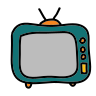
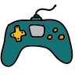

Chess

I enjoy playing chess on Chess.com, where I'm currently rated in the top 90% of players worldwide. I also frequent Lichess, a platform some of my friends use. If you'd like to challenge me to a game, you can find me on Chess.com. Feel free to send a friend request my way; I'll be sure to accept it.
Wikipedia
I occasionally edit Wikipedia articles, often focusing on adding citations to pages and making information more accessible.
Movies and TV Shows 
I enjoy watching movies, particularly those directed by Christopher Nolan, with The Dark Knight being a personal favorite. Additionally, I'm a fan of actors like Keanu Reeves and Al Pacino. In terms of TV shows, I prefer sitcoms and anthologies. I've watched The Big Bang Theory, Friends, Modern Family, and Seinfeld at least three times each. Love, Death and Robots, Naruto and Ricky and Morty are also among my cartoons (anime). I occasionally watch Nollywood movies, and I've compiled a list of some of my favorites, which you can find here: Mary's List (curated by Mary).
Music
In the realm of music, my favorites include Billie Eilish, Eminem, The Weeknd, Melaine Martinez, and Rihanna. Asake's "Lonely at the Top" has become a repetitive tune in my playlist, and I find it quite captivating. Additionally, I have an affinity for Boney M. and have curated an extensive playlist comprising music from the 80s and 90s. You can explore my Spotify profile for a glimpse of my playlists and follow me if you share similar music taste. Check it out here: Sodipe's Spotify.
Football (Soccer)
Although I enjoy watching football a lot, you won't catch me playing it. I'm a passionate Manchester United fan and try to catch as many of their games as possible. My interest extends to watching YouTube videos, particularly those focusing on football, especially Manchester United. I'm particularly drawn to tactical analysis videos and enjoy revisiting game highlights. My football watching is primarily centered around Manchester United, and I don't follow other football leagues closely.
Games 
I've had the pleasure of playing a diverse array of games and have many more on my list. Among my favorites are the Call of Duty: Modern Warfare series. I've also played and enjoyed every version of Pro Evolution Soccer from 2013 to 2021 and EA Sport's FIFA from 14 to 23. Additionally, I've completed Grand Theft Auto IV and V, as well as Need For Speed from both 2005 and 2012. But my favorite and most played games end up being building games like Cities Skylines and Sim City.
Football Manager

Football Manager is my favorite game. I have played every version from 2016 to 2023. In 2017, I won the Champions League with Rangers F.C. and RB Leipzig. Usually, I play as the manager of Manchester United and focus on developing young players. Recently, I achieved went unbeaten for 2 seasons in a row with O.G.C. Nice and Paris Saint Germain, securing the treble both times.
Formula 1
I follow Formula One, mainly due to my admiration for Lewis Hamilton. I also enjoy watching Lando Norris and Max Verstappen in action.